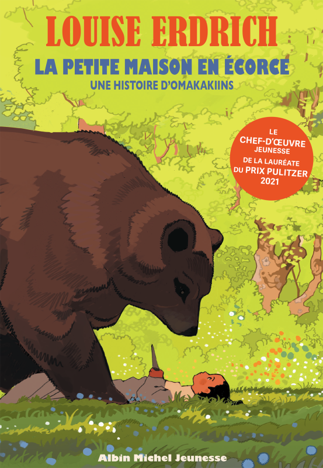

Jeunesse
La Petite Maison en écorce
Au fil des saisons, une jeune Ojibwée découvre son monde et ses traditions.
Ce qui vous attend
- Une enfance ojibwée
- Une vie au rythme des saisons
- Des traditions à découvrir
À savoir : épidémie, deuil et mort d'un enfant